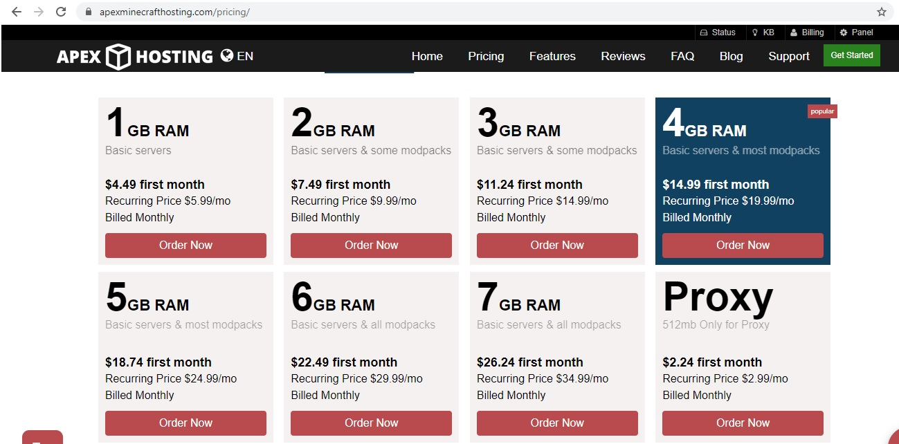
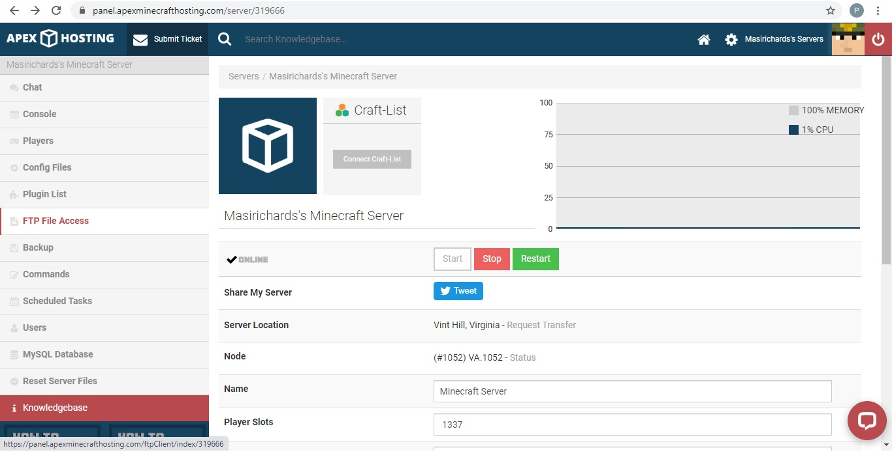
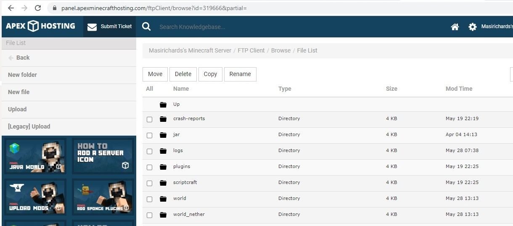
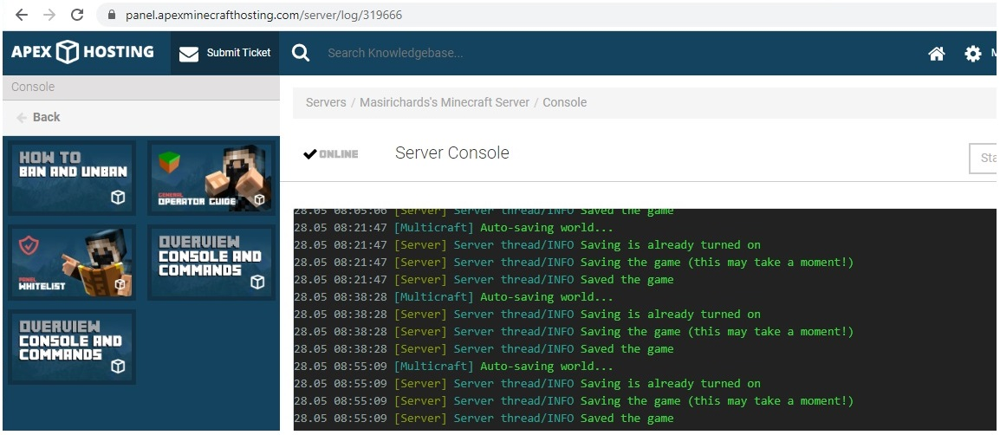

How to setup a public web-server
There are many public minecraft servers available. Most are very similar.
It all comes down to cost versus playability
Here is the price chart for apexminecrafthosting.com:

Servers use file transfer protocol (FTP) to move files from your personal computer to the web-site:

You need to copy scriptcraft.jar to the plugins directory, and copy over the files in your world directory

Then use the console to restart the server
